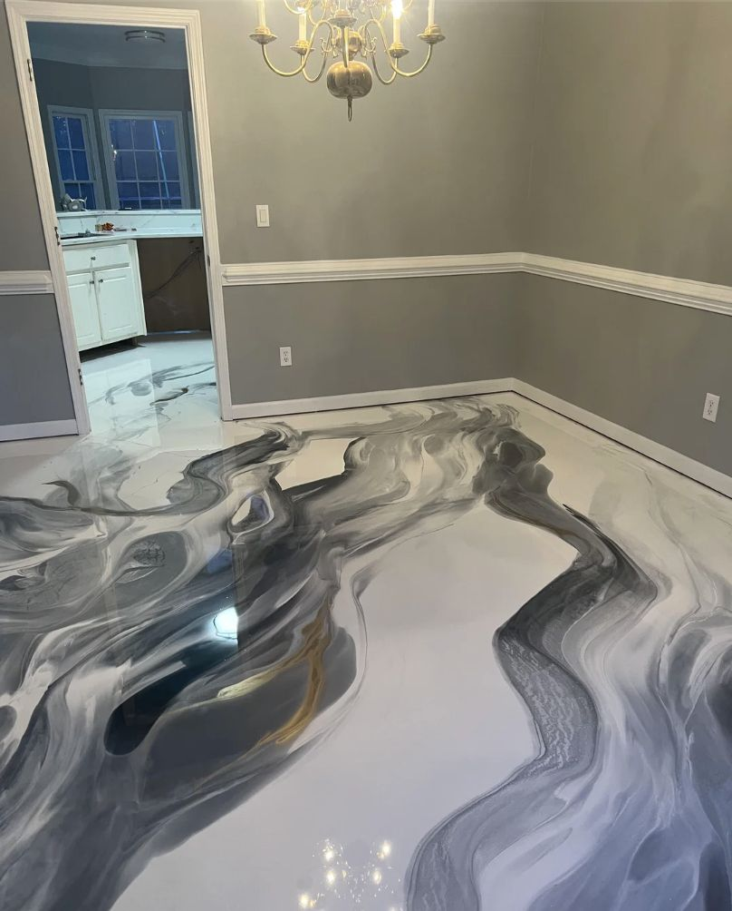

One-of-a-kind swirled finishes with UV-stable topcoats built for Arizona’s intense sun and heat.
Metallic epoxy is what people photograph when they share garage transformation posts. The swirling, three-dimensional finish—created by manipulating mica and aluminum pigment suspended in a clear epoxy base—looks completely different from every angle and under every light source. No two metallic floors are identical. In Yuma, metallic epoxy has become a popular choice for high-end garages, home studios, showroom-style spaces, and any application where the floor is meant to make a statement rather than just serve a function.

Metallic epoxy is the most technique-dependent flooring system we install. Here’s what separates a well-executed metallic floor from a mediocre one.
Same foundation as every floor we do. Metallic pigment magnifies any surface imperfection, so the concrete needs to be mechanically ground to a smooth, consistent CSP before any coating goes down.
A penetrating primer seals pores and prevents outgassing—any air escaping through the coating during cure creates a bubble that disrupts the metallic pattern. This is especially critical in Yuma, where hot concrete tends to off-gas more actively.
We mix metallic mica or aluminum pigment into the clear epoxy base at a precise ratio and apply it across the floor. The working time is short—especially in Yuma’s heat—so this step requires speed and experience.
While the base is still wet, we use squeegees, rollers, and controlled airflow to push the pigment into the swirling, lava-like patterns that define a metallic floor. Color blending happens at this stage.
The metallic layer cures fully before any topcoat goes down—typically 12–24 hours. We don’t rush this. Any foot traffic or topcoat application before full cure disrupts the metallic finish.
We finish with an aliphatic polyaspartic clear coat that blocks UV degradation and prevents the metallic pigment from oxidizing or yellowing in Yuma’s intense desert sun. This is what makes the finish durable for years, not months.
You’re investing in the space—new storage, insulation, lighting, maybe a car lift. A metallic floor completes the transformation in a way that no flake system can match.
A metallic floor in a home gym or creative studio makes the space feel intentional. It’s hard-wearing, easy to clean, and looks dramatic under good lighting.
Yuma auto dealers, boutique retail shops, and specialty businesses use metallic epoxy to create a floor that’s as distinctive as the products they sell. It photographs exceptionally well for marketing materials.
Every metallic floor is different. If you’ve been looking at flake floors and thinking “nice, but not quite”—metallic is probably what you’re actually after.
Both are durable, professionally applied, and vastly better than bare concrete. The choice comes down to the look and your budget.
| Factor | Metallic Epoxy | Full-Broadcast Flake |
|---|---|---|
| Visual Impact | High — unique, photogenic, depth | Professional — clean, consistent |
| Each Floor Unique? | Yes — no two are the same | No — predictable, matched to sample |
| Cost Per Sq Ft | $7 – $12 | $4 – $7 |
| Hides Imperfections | No — magnifies them | Yes — flake covers minor variation |
| Install Time | 2 days (cure between layers) | 1 day (typical garage) |
| Slip Resistance | Optional anti-slip additive needed | Natural texture from broadcast |
| Best For | Showrooms, premium garages, studios | Everyday garages, workshops, patios |
Not sure which system fits your space? Call (928) 817-8550 — we’ll give you an honest recommendation during the free estimate, not the upsell.
Metallic epoxy in Yuma runs $7–$12 per square foot, including diamond grinding, primer, metallic base coat, and UV-stable polyaspartic topcoat. A two-car garage (450 sq ft) typically falls in the $3,150–$5,400 range. The higher cost over flake epoxy reflects longer installation time and more demanding technique. Call (928) 817-8550 for a free estimate.
Yes, when finished with a UV-stable aliphatic topcoat. The metallic pigment itself doesn’t degrade in UV, but standard epoxy topcoats yellow in Arizona’s intense sun within 1–2 years. We use polyaspartic aliphatic clear coats on every metallic system—the same chemistry used in automotive clear coat—which maintains optical clarity in full desert sun for years.
Yes. Metallic pigments come in dozens of colors that can be blended into custom combinations. Popular Yuma choices include copper and black, blue-gray ocean, champagne and silver, and desert bronze. During the estimate we’ll show you samples and photos of completed metallic floors so you can make a confident choice before we start.
The standard gloss finish can be slippery when wet, similar to polished tile. For garages and workshops where wet surfaces are a concern, we add a fine anti-slip aggregate to the topcoat. This slightly reduces the mirror-like sheen but preserves the metallic depth and pattern while providing meaningful traction. We discuss this option with every metallic client before we start.
Free estimates in Yuma. We’ll show you metallic samples and help you pick the right color for your space.